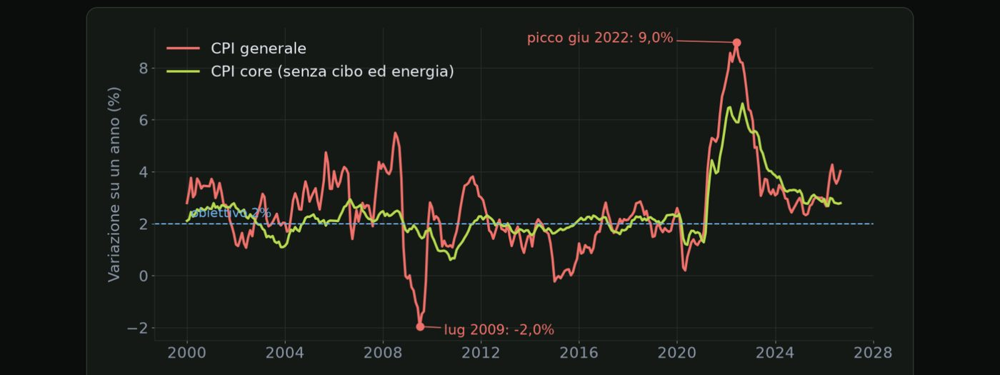
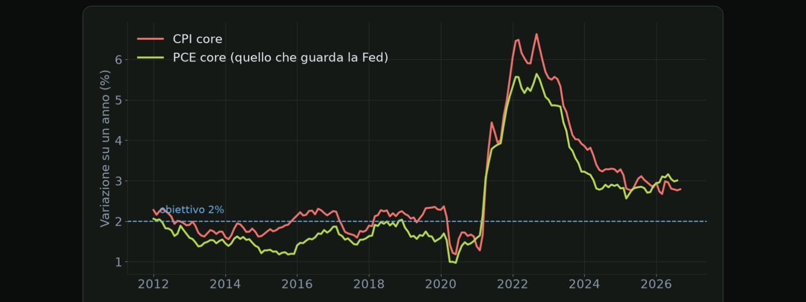
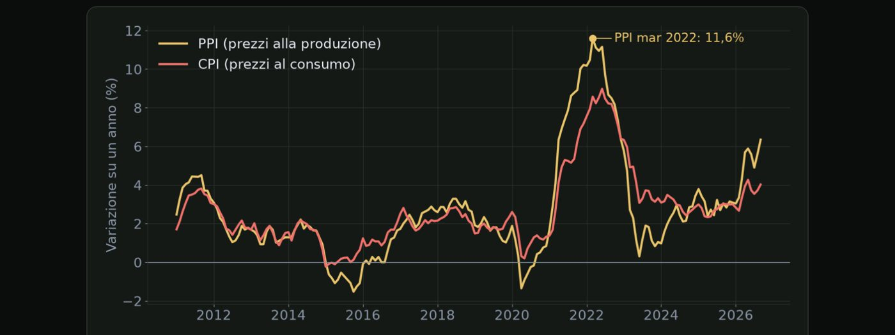
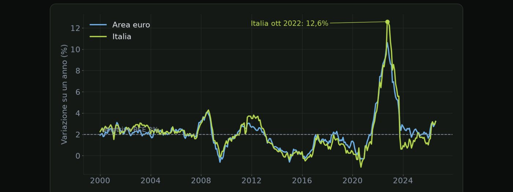
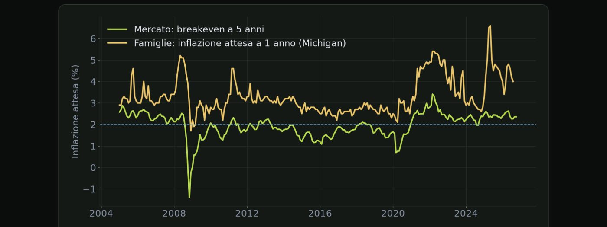

Materiale educativo, non consulenza finanziaria. Il trading con leva su forex, CFD e futures comporta un rischio elevato: puoi perdere tutto il capitale. Numeri, esempi e simulazioni non prevedono risultati futuri.
L'indice dei prezzi al consumo, il dato sull'inflazione più seguito al mondo.
Apriamo il modulo dedicato all'inflazione con il dato più famoso, l'indice dei prezzi al consumo americano, il CPI. Negli ultimi anni è diventato l'appuntamento più atteso del mese, capace di muovere il dollaro, l'oro e le borse in pochi secondi. Vediamo cosa misura e come si legge.
Il CPI misura come cambia il prezzo di un paniere di beni e servizi che rappresenta la spesa tipica delle famiglie americane. Nel paniere ci sono la casa, che pesa moltissimo, il cibo, l'energia, i trasporti, la salute e tanti servizi. Viene pubblicato ogni mese dal Bureau of Labor Statistics, l'ufficio di statistica del lavoro americano, di solito a metà mese, alle quattordici e trenta ora italiana. Ogni dato ha due confronti, uno rispetto al mese precedente e uno rispetto allo stesso mese dell'anno prima. Il secondo è quello che senti citare più spesso nei telegiornali.
| Contiene | tutto il paniere |
| Pro | misura la spesa reale |
| Contro | molto influenzato dall'energia |
| Esclude | cibo ed energia |
| Pro | mostra la tendenza di fondo |
| Uso | il più guardato dalla Fed |
Il CPI generale contiene tutto il paniere, e misura la variazione dei prezzi che le famiglie pagano davvero. Il suo limite è che risente molto dei prezzi dell'energia, che possono salire o scendere di colpo per motivi che la banca centrale non controlla. Per questo si guarda anche il CPI core, che esclude cibo ed energia. È più stabile, e mostra la tendenza di fondo dei prezzi. Banche centrali e mercati lo considerano spesso più importante del dato generale, perché dice se l'inflazione si sta radicando nell'economia.

Ecco il CPI vero, dal 2000 a oggi. La linea rossa è l'inflazione generale, quella verde la core, senza cibo ed energia. La generale è molto più nervosa: a luglio 2009, con il crollo del petrolio, va addirittura sotto zero, a meno due per cento. A giugno 2022 tocca il nove per cento, il massimo da oltre quarant'anni. La core si muove più lentamente: arriva al picco solo a settembre 2022, al sei virgola sei. A settembre 2026 la generale è al quattro per cento e la core al due virgola otto.
| Generale, su base annua | consenso 3,0% · effettivo 3,1% |
| Core, su base annua | consenso 2,8% · effettivo 3,0% |
| Core, sul mese | consenso 0,2% · effettivo 0,4% |
| Lettura | il core sorprende al rialzo: dato considerato "caldo" |
Perché la banca centrale americana preferisce un altro indice, e quando esce.
Nella lezione precedente abbiamo visto il CPI, il dato più famoso. Eppure, quando la Fed parla del suo obiettivo di inflazione al due per cento, non si riferisce al CPI, ma a un altro indice, chiamato PCE. In questa lezione vediamo cos'è e perché conta.
| Chi lo pubblica | Bureau of Labor Statistics |
| Quando | a metà mese |
| Ruolo | il più seguito dal mercato |
| Chi lo pubblica | Bureau of Economic Analysis |
| Quando | a fine mese |
| Ruolo | obiettivo ufficiale della Fed |
Il CPI, come abbiamo visto, viene pubblicato dal Bureau of Labor Statistics a metà mese, ed è il dato a cui il mercato reagisce di più. Il PCE, cioè l'indice dei prezzi delle spese per consumi personali, viene pubblicato dal Bureau of Economic Analysis verso la fine del mese successivo, insieme ai dati su redditi e spese delle famiglie. Dal 2012 è il riferimento ufficiale della Fed per il suo obiettivo del due per cento.
Le ragioni principali sono tre. Il paniere del PCE è più ampio, perché include anche spese fatte per conto delle famiglie, come una parte delle spese sanitarie pagate da assicurazioni e programmi pubblici. I pesi delle varie voci vengono aggiornati più spesso, e seguono meglio il fatto che le persone cambiano abitudini quando i prezzi salgono, per esempio comprando prodotti meno cari. Il risultato è che il PCE, storicamente, tende a essere un po' più basso del CPI. Quando senti che la Fed vuole l'inflazione al due per cento, si riferisce a questo indice, e in particolare alla sua versione core.

Ecco i due indici core a confronto, dal 2012. Si muovono quasi insieme, ma il PCE, la linea verde, sta quasi sempre un po' sotto: in media circa quattro decimi di punto. Nel 2022 il CPI core arriva al sei virgola sei per cento, il PCE core si ferma al cinque virgola sei. È per questo che a volte il mercato dice che l'inflazione è alta, e la Fed sembra meno preoccupata: guardano due termometri diversi.
Allora perché il mercato dà meno peso al PCE rispetto al CPI? Perché arriva dopo, quando gran parte delle informazioni sui prezzi del mese è già stata pubblicata. Inoltre gli economisti riescono a stimarlo con buona precisione partendo dai dati del CPI e del PPI, per cui le sorprese sono di solito più piccole. Questo non significa che vada ignorato. Proprio perché è il dato di riferimento della Fed, una sorpresa sul PCE core può cambiare le attese sui tassi, soprattutto se arriva pochi giorni prima di una riunione.
I prezzi pagati dalle imprese anticipano quelli pagati dalle famiglie.
Prima di arrivare sugli scaffali dei negozi, i prezzi passano dalle imprese. Quanto paga un'azienda per le materie prime, per l'energia, per i semilavorati? È quello che misura l'indice dei prezzi alla produzione, il PPI. In questa lezione vediamo perché viene considerato un segnale anticipatore dell'inflazione.
Il PPI misura come cambiano i prezzi che le imprese ricevono quando vendono i loro beni e servizi, spesso ad altre imprese. Segue tutta la filiera, dalle materie prime come metalli ed energia, fino ai prodotti finiti pronti per la vendita. Viene pubblicato ogni mese dallo stesso ufficio che pubblica il CPI, di solito a pochi giorni di distanza, prima o dopo, alle quattordici e trenta ora italiana.
| Mese 1 | l'energia e le materie prime aumentano |
| Mese 2 | le imprese pagano di più: il PPI sale |
| Mesi successivi | parte dei costi viene girata ai clienti |
| Risultato | il CPI sale con qualche mese di ritardo |

E sui dati veri? La linea gialla è il PPI, la rossa il CPI. Nel 2022 il PPI arriva al picco a marzo, all'undici virgola sei per cento, mentre il CPI tocca il suo massimo tre mesi dopo, a giugno. Il PPI sale di più e scende di più, perché misura prezzi più vicini alle materie prime. Il legame però non è una regola fissa: a volte i due si muovono insieme, e il ritardo cambia ogni volta.
Il mercato usa il PPI in tre modi. Quando esce dopo il CPI, serve a confermare o smentire il dato sull'inflazione al consumo, e a capire se una sorpresa era un caso isolato. Alcune voci del PPI, come i prezzi di alcuni servizi sanitari e finanziari, entrano nel calcolo del PCE, quindi gli economisti lo usano per affinare le stime dell'indice preferito dalla Fed. In genere il PPI pesa meno del CPI, ma una sorpresa grande può comunque muovere il mercato in modo deciso, soprattutto nei periodi in cui l'inflazione è al centro dell'attenzione.
Come si misura nell'eurozona, quando esce e perché la stima flash conta più del dato finale.
Se fai trading sull'euro, l'inflazione americana non basta. Devi conoscere anche quella europea, che guida le decisioni della BCE. In questa lezione vediamo come si misura, quando esce, e quali numeri guarda il mercato.
Nell'eurozona si usa l'indice armonizzato dei prezzi al consumo, chiamato HICP. È l'indice di riferimento per l'inflazione europea, pubblicato da Eurostat, l'ufficio statistico dell'Unione europea. Si chiama armonizzato perché viene calcolato con le stesse regole in tutti i paesi, così da poter confrontare l'inflazione italiana con quella tedesca o francese. È su questo indice che la BCE misura il suo obiettivo, cioè un'inflazione al due per cento nel medio periodo.
| Dato | Quando |
|---|---|
| Inflazione dei singoli paesi | negli ultimi giorni del mese, prima del dato europeo |
| Stima flash dell'eurozona | a fine mese o primo giorno lavorativo successivo, ore 11:00 |
| Dato finale | circa due settimane dopo, raramente diverso dalla flash |
Per l'Italia, il dato viene pubblicato dall'ISTAT. L'ISTAT pubblica una stima preliminare verso la fine del mese, e poi il dato definitivo a metà del mese successivo. Esistono due indici principali, quello nazionale per l'intera collettività, chiamato NIC, e quello armonizzato, chiamato IPCA, che è la versione italiana dell'indice europeo. Per il mercato, il dato italiano conta soprattutto come tassello del dato europeo, insieme a quelli di Germania, Francia e Spagna.

Ecco l'inflazione armonizzata dell'area euro, in blu, e dell'Italia, in verde, dal 2000. Per vent'anni restano vicine all'obiettivo del due per cento, con periodi addirittura sotto zero, come nel 2020. Poi la crisi dell'energia: a ottobre 2022 l'area euro tocca il dieci virgola sei per cento, e l'Italia il dodici virgola sei, perché dipende di più dal gas importato. Ad agosto 2026 entrambe sono al tre virgola due.
Perché le banche centrali guardano quello che la gente si aspetta, e come si misura.
Chiudiamo il modulo sull'inflazione con un concetto che sembra astratto, ma che le banche centrali considerano fondamentale, cioè le aspettative di inflazione. Quanto pensano le persone e i mercati che saliranno i prezzi nei prossimi anni? La risposta influenza i prezzi di oggi.
Le aspettative contano per tre motivi. Il primo è che tendono ad autoalimentarsi. Se tutti si aspettano prezzi più alti, le imprese alzano i listini con più facilità, e i consumatori accettano gli aumenti come normali. Il secondo riguarda salari e prezzi. Lavoratori e imprese fissano stipendi e listini guardando al futuro, e se si aspettano un'inflazione alta cercano di proteggersi in anticipo. Il terzo è che le banche centrali vogliono aspettative ancorate, cioè stabili vicino al due per cento. Quando le aspettative iniziano a salire, è un segnale che la banca centrale sta perdendo credibilità, e di solito reagisce con decisione.
| Fonte | Cosa misura |
|---|---|
| Sondaggi alle famiglie | per esempio quello dell'Università del Michigan, ogni mese |
| Sondaggi agli economisti | previsioni dei professionisti |
| Prezzi di mercato | differenza tra titoli di Stato normali e indicizzati all'inflazione |

Ecco due misure vere delle aspettative. In verde quella del mercato, il breakeven a cinque anni: nel panico del novembre 2008 va addirittura sotto zero, e a marzo 2022 tocca il tre virgola quaranta per cento. In giallo quella delle famiglie americane, dal sondaggio dell'Università del Michigan, che è sempre più alta e più nervosa: a maggio 2025 arriva al sei virgola sei. Negli ultimi dati il mercato si aspetta circa il due virgola quattro per cento, le famiglie il quattro.
| Sondaggio sulle famiglie | aspettative a 5 anni da 3,0% a 3,4% |
| Lettura | il pubblico si aspetta più inflazione: rischio che si radichi |
| Possibile reazione | il mercato teme una banca centrale più dura |
| Effetto tipico | rendimenti su, valuta più forte |
Spunta ogni punto solo se sapresti spiegarlo a voce a un altro trader.
Materiale educativo, non consulenza finanziaria. Il trading con leva su forex, CFD e futures comporta un rischio elevato: puoi perdere tutto il capitale. Numeri, esempi e simulazioni non prevedono risultati futuri. · riskly.trade